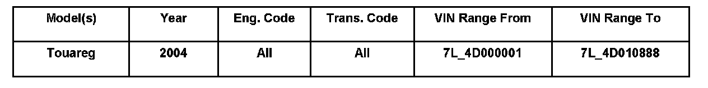

Instruments - Compass Display Stays On For A Few Seconds
91 07 02March 19, 2007
2005498 Supersedes T.B. Group 91 number 03-01 dated Aug. 14, 2003 due to inclusion into ElsaWeb and update to Self Diagnostics Functions per Base 10.01.

Affected Vehicles
Condition
Roof Display for Compass, Adapting to Stay On With Ignition
Customer is concerned that the roof display for the compass stays on for only a few seconds.
Technical Background
This is the normal operation of the compass display. The compass may be adapted so that it is displayed whenever the ignition is on.
Production Solution
Changed as of VIN: WVGEM67L24D010889.
Service
With VAS 5051 / VAS 5052 Diagnostic tool connected to the vehicle:
^ Select "Vehicle Self-Diagnosis" and then select "6E" for Roof Display
^ Select function "012 Adaptation".
^ Select channel "1".
^ Change value to "0" and store value.
^ 0 = display always ON (with ignition switched ON).
^ 1-255 = display stays ON for specific time depending on input value (with ignition switched ON and display button pushed).
Warranty
Information only.
Required Parts and Tools
No Special Tools required.
No Special Parts required. Always see ETKA for the latest part(s) information.